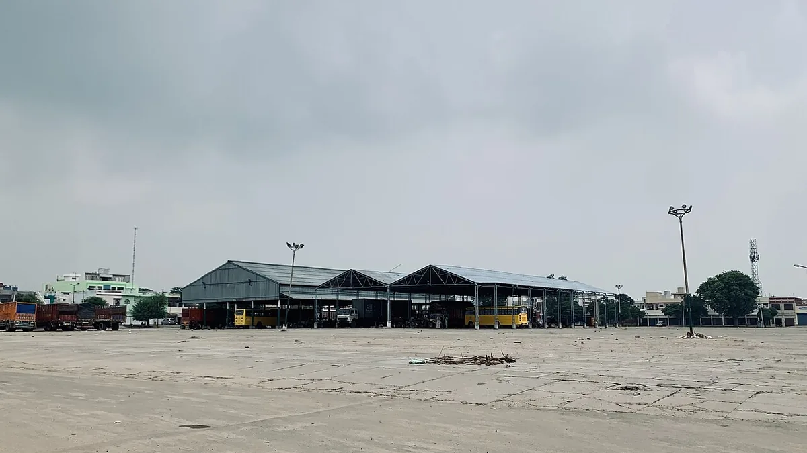

MP ई-उपार्जन पंजीयन
MP e-Uparjan Registration — Selling Your Crop at MSP
समर्थन मूल्य पर बेचने का एक ही रास्ता है — ई-उपार्जन। और उसमें चूकने की एक ही वजह होती है: पंजीयन की तारीख निकल जाना।
✍️ Kunal Rajput — KrashiMitra⏱️ 9 मिनट पढ़ें📅 अगस्त 2026

एक अनाज मंडी का दृश्य — ई-उपार्जन इसी बिक्री का सरकारी, समर्थन मूल्य वाला रास्ता है।
मंडी के भाव से नीचे बेचने की मजबूरी का सरकारी विकल्प
🆓
निःशुल्क
पंचायत, तहसील, समिति व ऐप पर
💳
अधिकतम ₹50
कियोस्क / CSC / साइबर कैफे
📅
तारीख
निकली तो उस सीज़न कोई रास्ता नहीं
📖
भूमिका
मंडी में व्यापारी जो भाव बोले वही लेना पड़े — मध्य प्रदेश के किसान के पास इसका एक ही सरकारी विकल्प है: ई-उपार्जन। यह वह व्यवस्था है जिससे किसान अपनी उपज सीधे सरकार को न्यूनतम समर्थन मूल्य (MSP) पर बेचता है, बीच में कोई व्यापारी नहीं होता, और पैसा सीधे उसके आधार से जुड़े बैंक खाते में आता है।
पर हर साल हज़ारों किसान इससे बाहर रह जाते हैं, और वजह लगभग हमेशा एक ही होती है — पंजीयन की तारीख निकल जाना। ई-उपार्जन में खरीदी तब शुरू होती है जब पंजीयन की खिड़की बंद हो चुकी होती है, और पंजीयन के बिना उपज केंद्र पर तुली ही नहीं जाती, चाहे फसल कितनी भी अच्छी हो। इस लेख में पंजीयन कहाँ और कब कराएँ, कौन-से कागज़ लगेंगे, स्लॉट बुकिंग कैसे होती है, केंद्र पर क्या होता है, पैसा कब आता है — और सिकमी-बटाईदार किसान के लिए अलग नियम क्या है।
विज्ञापन
🧾
ई-उपार्जन क्या है?
ई-उपार्जन मध्य प्रदेश शासन का ऑनलाइन सिस्टम है जिसके ज़रिए सरकार किसानों से समर्थन मूल्य पर फसल खरीदती है। आधिकारिक पोर्टल है mpeuparjan.nic.in। पूरी प्रक्रिया छह चरणों में चलती है:
किसान पंजीयन — सीज़न शुरू होने से पहले, तय तारीखों के भीतर
स्लॉट बुकिंग — किस दिन और किस केंद्र पर उपज लानी है, यह तय करना
केंद्र पर तुलाई और गुणवत्ता जाँच
परिवहन — खरीदी गई उपज का गोदाम तक जाना
भंडारण — वेयरहाउस में जमा
भुगतान — आधार से जुड़े बैंक खाते में सीधे DBT
💡
MSP का मतलब समझ लीजिए। यह वह न्यूनतम भाव है जिस पर सरकार खरीदने को बाध्य है। मंडी का भाव इससे ऊपर हो तो मंडी में बेचना बेहतर है; नीचे हो तो ई-उपार्जन ही बचाता है। इसीलिए पंजीयन करा लेना समझदारी है भले ही आपको बेचना न पड़े — यह एक मुफ्त बीमा जैसा है।
🗓️
पंजीयन कब होता है — दोनों सीज़न
सीज़न
मुख्य फसलें
पंजीयन (सामान्यतः)
खरीदी (सामान्यतः)
खरीफ
धान, ज्वार, बाजरा
सितंबर–अक्टूबर
नवंबर–जनवरी
रबी
गेहूं
फरवरी–मार्च
मार्च–मई
रबी (दलहन-तिलहन)
चना, मसूर, सरसों
फरवरी–मार्च
मार्च–मई
ये सामान्य समय-सीमाएँ हैं। हर साल की असली तारीखें शासन की अधिसूचना से तय होती हैं और कई बार बढ़ाई भी जाती हैं — इसलिए सीज़न से पहले mpeuparjan.nic.in या अपनी सहकारी समिति से तारीख ज़रूर पूछ लीजिए। किन फसलों की खरीदी होगी यह भी हर साल अलग हो सकता है।
📍
पंजीयन कहाँ कराएँ — और कहाँ फीस लगती है
केंद्र
शुल्क
ग्राम पंचायत / जनपद पंचायत कार्यालय
निःशुल्क
तहसील कार्यालय
निःशुल्क
सहकारी समिति / सहकारी विपणन संस्था
निःशुल्क
MP किसान ऐप (खुद अपने मोबाइल से)
निःशुल्क
MP ऑनलाइन कियोस्क
अधिकतम ₹50
कॉमन सर्विस सेंटर (CSC)
अधिकतम ₹50
निजी साइबर कैफे
अधिकतम ₹50
⚠️
₹50 से ज़्यादा माँगना नियम के खिलाफ है। निजी केंद्रों के लिए यही अधिकतम सीमा तय है, और सरकारी केंद्रों पर एक रुपया भी नहीं लगता। ज़्यादा माँगे जाने पर रसीद माँगिए और तहसील कार्यालय या CM हेल्पलाइन 181 पर शिकायत कीजिए।
विज्ञापन
📄
ज़रूरी दस्तावेज़
आधार कार्ड: पंजीयन में आधार सत्यापन (OTP या बायोमेट्रिक) अनिवार्य है।
समग्र सदस्य आईडी: मध्य प्रदेश के निवासी होने की पहचान।
ऋण पुस्तिका / खसरा-खतौनी की नकल: ज़मीन और बोई गई फसल का रकबा इसी से मिलान होता है।
बैंक पासबुक की कॉपी: खाता आधार से जुड़ा और चालू होना चाहिए।
आधार से जुड़ा मोबाइल नंबर: OTP, स्लॉट बुकिंग और भुगतान का SMS इसी पर आता है।
पासपोर्ट साइज़ फोटो।
जिन किसानों का पंजीयन पिछले सीज़न में हो चुका है, उन्हें आमतौर पर दोबारा सारे दस्तावेज़ जमा नहीं करने पड़ते — केवल जानकारी की पुष्टि और ज़रूरत हो तो सुधार करना होता है।
💡
पंजीयन तभी होगा जब भू-अभिलेख का नाम आधार के नाम से मिलेगा। यह सबसे आम अड़चन है। अगर खसरे में "रामप्रसाद" और आधार में "राम प्रसाद" है, तो पहले पटवारी से नाम दुरुस्त करा लीजिए — सीज़न शुरू होने के बाद यह सुधार कराने का समय नहीं मिलता।
🤝
सिकमी, बटाईदार, कोटवार और वन पट्टाधारी
जिनके नाम ज़मीन नहीं है पर खेती वही करते हैं — उनके लिए नियम अलग है। सिकमी, बटाईदार, कोटवार और वन पट्टाधारी किसानों का पंजीयन केवल सहकारी समिति के केंद्रों पर होता है, MP ऑनलाइन कियोस्क या ऐप से नहीं। साथ ही इनके आवेदनों का राजस्व विभाग द्वारा शत-प्रतिशत सत्यापन कराया जाता है।
यह नियम कड़ा ज़रूर है, पर इसकी वजह समझने लायक है: यही वह रास्ता है जिससे कोई और आपकी ज़मीन के नाम पर उपज बेच नहीं सकता। बटाईदार किसान को केंद्र पर बटाई का लिखित अनुबंध या समिति से मान्य दस्तावेज़ साथ ले जाना चाहिए, वरना सत्यापन में आवेदन अटक जाता है।
📱
स्लॉट बुकिंग — उपज ले जाने से पहले
पंजीयन हो जाने के बाद उपज सीधे केंद्र पर नहीं ले जाई जाती। पहले स्लॉट बुक करना पड़ता है, यानी यह तय करना कि आप किस तारीख को, किस केंद्र पर, कितनी उपज लेकर आएँगे। तरीका यह है:
mpeuparjan.nic.in पर जाकर सीज़न और फसल चुनें, फिर "किसान स्लॉट बुकिंग" पर जाएँ।
किसान कोड / मोबाइल नंबर और कैप्चा भरकर OTP लें।
आधार से जुड़े मोबाइल पर आए OTP से सत्यापन करें।
अपनी तहसील, उपार्जन केंद्र और तारीख चुनें।
बेची जाने वाली उपज की मात्रा भरें और समय चुनें।
सुरक्षित करें और पावती (रसीद) का प्रिंट निकाल लें।
केंद्र पर यही पावती दिखानी होती है। बुक किए गए दिन और समय पर ही उपज ले जाइए — तारीख निकल जाने पर स्लॉट रद्द हो जाता है और दोबारा बुक करना पड़ता है, जिसमें कई दिन लग सकते हैं।
⚖️
केंद्र पर क्या होता है और पैसा कब आता है
गुणवत्ता जाँच (FAQ मानक): नमी, टूटे दाने, मिट्टी-कंकड़ और सिकुड़े दानों की जाँच होती है। मानक से बाहर की उपज लौटा दी जाती है — इसलिए उपज साफ करके और अच्छी तरह सुखाकर ही ले जाएँ।
गिरदावरी का मिलान: आपके भू-अभिलेख में दर्ज बोई गई फसल और रकबे से मात्रा मिलाई जाती है। खसरे में फसल दर्ज न हो तो तुलाई नहीं होती।
तुलाई और पावती: तुलाई के बाद खरीदी की पावती मिलती है — इसे कटाई-बिक्री के पूरे रिकॉर्ड की तरह सँभालकर रखें।
भुगतान: राशि आधार से जुड़े बैंक खाते में DBT से आती है, सामान्यतः खरीदी के कुछ ही दिनों के भीतर। निष्क्रिय, संयुक्त और वॉलेट खाते इसके लिए मान्य नहीं हैं।
नकद कभी नहीं: ई-उपार्जन में भुगतान हमेशा बैंक खाते में होता है। केंद्र पर नकद देने या "कमीशन" माँगने वाला कोई भी व्यक्ति नियम के बाहर है।
⚠️
फसल का न्यूनतम समर्थन मूल्य हर सीज़न बदलता है और भारत सरकार की घोषणा से तय होता है। बेचने से पहले अपनी फसल का उस सीज़न का घोषित MSP mpeuparjan.nic.in या अपनी सहकारी समिति से पक्का कर लीजिए। कुछ फसलों पर मध्य प्रदेश शासन अलग से बोनस भी देता है, जो MSP से अलग होता है।
🚫
ये गलतियाँ कभी न करें
पंजीयन की तारीख निकाल देना — यही अकेली सबसे बड़ी वजह है जिससे किसान MSP से चूकते हैं। खिड़की बंद होने के बाद कोई रास्ता नहीं बचता।
गीली या बिना साफ की उपज ले जाना — नमी मानक से ज़्यादा निकली तो पूरी गाड़ी लौट आती है, और भाड़ा अलग से जाता है।
स्लॉट बुक किए बिना केंद्र पहुँच जाना — बिना पावती के तुलाई नहीं होती।
किसी और के नाम/खाते पर उपज बेचना — यह गंभीर अनियमितता है और भुगतान रुकने के साथ कानूनी कार्रवाई भी हो सकती है।
बैंक खाता बदलकर पोर्टल पर अपडेट न करना — पुराने बंद खाते में भेजा गया भुगतान लौट जाता है।
खसरे में फसल दर्ज कराए बिना पंजीयन करा लेना — गिरदावरी में फसल नहीं मिली तो मात्रा शून्य मानी जाती है।
पावती फेंक देना — भुगतान में देरी होने पर शिकायत की जड़ यही कागज़ होता है।
✅
निष्कर्ष
तीन बातें याद रखिए। पहली — पंजीयन की तारीख ही सब कुछ है; बाकी सब बाद में ठीक हो सकता है, यह नहीं। दूसरी — भू-अभिलेख का नाम और आधार का नाम मिलना चाहिए, और यह सुधार सीज़न से पहले करा लेना चाहिए। तीसरी — पंजीयन सरकारी केंद्रों पर मुफ्त है, निजी केंद्र पर अधिकतम ₹50; इससे ज़्यादा माँगा जाना शिकायत का विषय है।
पंजीयन करा लेना उस बीमे जैसा है जिसका प्रीमियम शून्य है — भाव गिरे तो यही काम आता है।
⚠️
उपार्जन की तारीखें, फसलों की सूची, गुणवत्ता मानक और समर्थन मूल्य हर सीज़न शासन की अधिसूचना से बदलते हैं। पंजीयन से पहले mpeuparjan.nic.in और अपनी सहकारी समिति या तहसील कार्यालय से मौजूदा नियम ज़रूर पक्के कर लें। कृषि मित्र एक जानकारी देने वाला मंच है — हम न उपार्जन कराते हैं, न पंजीयन, न किसी सरकारी विभाग के एजेंट हैं।
विज्ञापन
❓
अक्सर पूछे जाने वाले सवाल
1MP e-Uparjan में पंजीयन कैसे करें?
पंजीयन mpeuparjan.nic.in पोर्टल पर या ग्राम पंचायत, तहसील कार्यालय, सहकारी समिति और MP किसान ऐप के ज़रिए कराया जाता है, और इन सरकारी केंद्रों पर यह पूरी तरह निःशुल्क है। पंजीयन के लिए आधार, समग्र आईडी, खसरा-खतौनी या ऋण पुस्तिका, बैंक पासबुक और आधार से जुड़ा मोबाइल नंबर चाहिए होता है।
2ई-उपार्जन पंजीयन की फीस कितनी है?
सरकारी केंद्रों — ग्राम पंचायत, तहसील कार्यालय, सहकारी समिति और MP किसान ऐप — पर पंजीयन बिल्कुल मुफ्त है। MP ऑनलाइन कियोस्क, CSC और निजी साइबर कैफे पर अधिकतम ₹50 लिया जा सकता है। इससे ज़्यादा माँगा जाए तो तहसील कार्यालय या CM हेल्पलाइन 181 पर शिकायत करें।
3ई-उपार्जन में स्लॉट बुकिंग कैसे करते हैं?
पंजीयन के बाद mpeuparjan.nic.in पर फसल चुनकर "किसान स्लॉट बुकिंग" में जाइए, किसान कोड या मोबाइल नंबर डालकर OTP से सत्यापन कीजिए, फिर तहसील, उपार्जन केंद्र, तारीख और उपज की मात्रा चुनकर पावती का प्रिंट निकाल लीजिए। केंद्र पर यही पावती दिखानी होती है और बुक किए गए दिन ही उपज ले जानी होती है।
4ई-उपार्जन का पैसा कितने दिन में आता है?
भुगतान आधार से जुड़े बैंक खाते में DBT के ज़रिए, खरीदी के कुछ ही दिनों के भीतर आता है। खाता चालू और आधार से जुड़ा होना ज़रूरी है — निष्क्रिय, संयुक्त और वॉलेट खातों में भुगतान नहीं होता। ई-उपार्जन में नकद भुगतान कभी नहीं किया जाता।
5बटाईदार या सिकमी किसान ई-उपार्जन में पंजीयन कैसे कराए?
सिकमी, बटाईदार, कोटवार और वन पट्टाधारी किसानों का पंजीयन केवल सहकारी समिति के केंद्रों पर होता है — MP ऑनलाइन कियोस्क या ऐप से नहीं। इनके आवेदनों का राजस्व विभाग द्वारा शत-प्रतिशत सत्यापन कराया जाता है, इसलिए बटाई का लिखित अनुबंध या समिति से मान्य दस्तावेज़ साथ ले जाना चाहिए।
6MP में गेहूं का पंजीयन कब शुरू होता है?
रबी सीज़न में गेहूं का पंजीयन सामान्यतः फरवरी से मार्च के बीच होता है और खरीदी मार्च से मई तक चलती है; खरीफ में धान, ज्वार और बाजरा का पंजीयन आमतौर पर सितंबर-अक्टूबर में होता है। असली तारीखें हर साल शासन की अधिसूचना से तय होती हैं, इसलिए mpeuparjan.nic.in या अपनी सहकारी समिति से पुष्टि ज़रूर करें।
7पंजीयन के बिना क्या समर्थन मूल्य पर फसल बेच सकते हैं?
नहीं — पंजीयन के बिना उपार्जन केंद्र पर उपज तुली ही नहीं जाती, चाहे फसल कितनी भी अच्छी हो। पंजीयन की खिड़की बंद होने के बाद उस सीज़न में MSP पर बेचने का कोई रास्ता नहीं बचता, इसलिए तारीख निकलने से पहले पंजीयन करा लेना ही एकमात्र उपाय है।
8उपज केंद्र से लौटा दी जाए तो इसकी क्या वजह होती है?
सबसे आम वजह है नमी का मानक से ज़्यादा होना, और उसके बाद टूटे दाने, मिट्टी-कंकड़ या सिकुड़े दानों का तय सीमा से अधिक निकलना। दूसरी बड़ी वजह है गिरदावरी का मिलान न होना — यानी आपके खसरे में वह फसल या रकबा दर्ज ही न होना। उपज साफ करके, अच्छी तरह सुखाकर ले जाना और खसरे में फसल की प्रविष्टि पहले करा लेना दोनों ज़रूरी हैं।
🌾
KrashiMitra.in — आपका विश्वसनीय कृषि साथी
मंडी भाव, सरकारी योजनाएं, बीज-खाद की जानकारी और फसल रोग उपचार — सब कुछ हिंदी में।